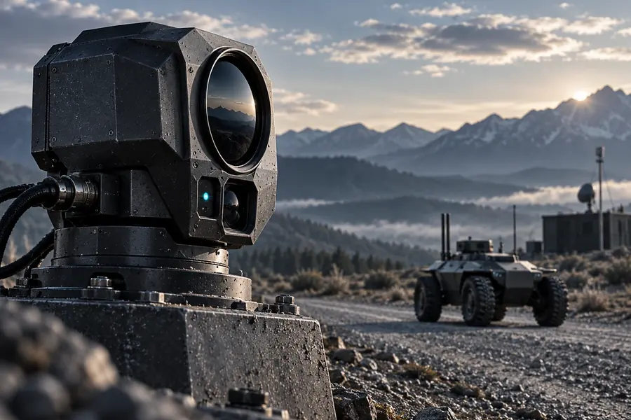

MISSION AREA · DEFEND
Layered Defense
Detect, deter, and defeat threats in depth, not at a single line.
- Counter-UAS detection and defeat
- Electronic warfare and spectrum operations
- Directed energy integration
- Air and missile defense C2